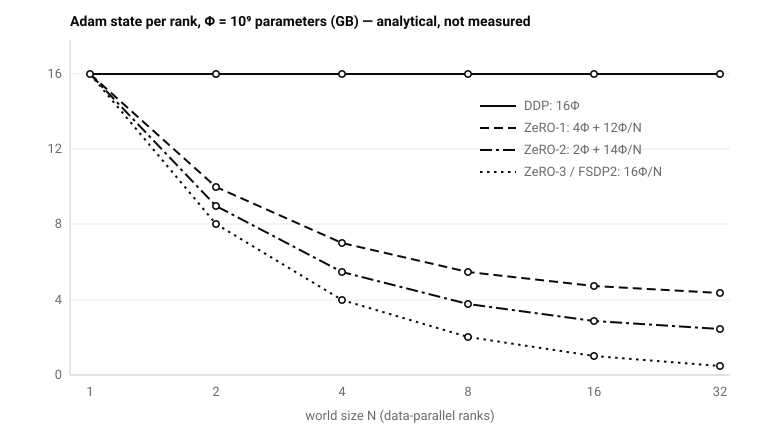
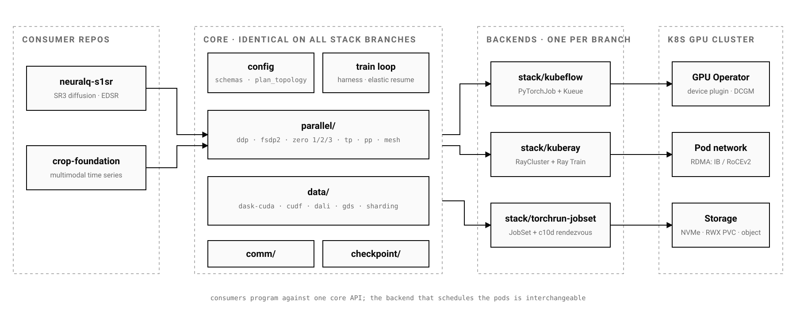

Abstract
Research note 002 measured a single-GPU baseline for a geospatial workload and refused to fabricate multi-GPU numbers. This note documents the framework built to earn them: neuralq-distributed, NeuralQ’s distributed-training and GPU data-plane layer. One Python core implements data, model and hybrid parallelism — DistributedDataParallel, FSDP2, ZeRO stages 1–3, tensor and pipeline parallelism composed on a dp×tp×pp device mesh — together with a RAPIDS data plane, deployable through three interchangeable Kubernetes backends. Every engine choice is justified by explicit memory and communication accounting rather than fashion, and every topology is schema-validated before a pod is scheduled. The framework is in alpha. All quantities in this note are analytical budgets derived from stated assumptions and the published literature; no empirical multi-GPU benchmark is reported here, and none should be quoted from this article.
1. Two workloads, one budget
The framework exists because two NeuralQ model lines stress opposite resources. The SAR super-resolution line trains SR3-class conditional diffusion models whose Adam-plus-EMA optimizer state outgrows a single GPU’s memory as the UNet scales, while its raster preprocessing is CPU-bound at terabyte scale. The crop-intelligence line is the opposite: the model is compact (~1.95 M parameters, research note 001), so the engine choice is nearly irrelevant — but its multimodal time-series input pipeline is I/O-bound, which is exactly the failure mode research note 002 warned about: adding ranks to a starved input pipeline duplicates starvation, not compute.
Four design tenets order every decision in the framework:
- Correctness over convenience: a distributed run must be statistically equivalent to its single-device reference within a documented numerical envelope; collective semantics are never hidden.
- Config-driven: Pydantic-validated YAML; an invalid topology fails schema validation in seconds, not after a six-hour queue wait.
- Backend-agnostic core: one launcher contract resolves rank identity; the same training script runs under
torchrun, Kubeflow, Ray Train or a raw JobSet. - GPU-resident data path: decode, augment and stage batches on-device; the CPU touches bytes only where physics requires it.
2. Memory accounting
For a model with Φ parameters trained in mixed precision with Adam, the replicated state is:
That single identity [4, 13] generates the engine taxonomy. Data parallelism replicates all 16Φ per rank; ZeRO partitions successively more of it across N ranks; fully sharded data parallel shards everything and re-gathers parameters transiently around each compute unit:
| Engine | State per rank | Communication per step | Placement rule |
|---|---|---|---|
| DDP | 16Φ | all-reduce 2M(N−1)/N, overlapped with backward | any fabric |
| ZeRO-1 | 4Φ + 12Φ/N | ≈ DDP | any fabric |
| ZeRO-2 | 2Φ + 14Φ/N | ≈ DDP, reduce-scatter form | any fabric |
| ZeRO-3 / FSDP2 | 16Φ/N (+ largest gathered unit) | ≈ 1.5× DDP | any; HSDP confines gather/scatter to NVLink |
| Tensor parallel | ~16Φ/t for sharded blocks | 4 all-reduces of b·s·h per layer | NVLink only |
| Pipeline (1F1B) | ~16Φ/p + in-flight activations | p2p boundary activations; bubble (p−1)/(m+p−1) | crosses nodes by design |

The chart explains the framework’s default posture: DDP whenever 16Φ plus activations fits one GPU, because it is exactly-equivalent large-batch SGD at the lowest communication volume [3, 12]; sharding when optimizer state is the blocker, buying O(1/N) state memory for a bounded ~1.5× communication factor [4, 5]; activation checkpointing before model splitting [10].
3. Communication accounting
Ring all-reduce moves approximately 2M(N−1)/N bytes per rank per step for gradient payload M, and is bandwidth-optimal for large messages [1, 2]. Its latency term grows linearly in N, which the framework models explicitly:
Two consequences shape engine placement. First, tensor parallelism issues four latency-critical all-reduces of activation payload b·s·h per transformer layer per step [6, 9] — so the framework hard-codes the invariant that the tensor-parallel degree stays inside one NVLink domain (tp ≤ gpus_per_node). Second, pipeline parallelism pays only point-to-point boundary traffic plus an idle-bubble fraction (p−1)/(m+p−1) [7, 8]; the validator warns when the bubble exceeds 20% and recommends m ≥ 4p micro-batches. Hybrid placements compose with tp innermost on NVLink, pp across nodes, and dp outermost.
4. Topology as a validated contract
The topology is a named device mesh, world = dp × tp × pp, and its invariants are checked at configuration-validation time rather than discovered at rendezvous: dp·tp·pp = world is a hard error otherwise; tp must divide the GPUs per node; the pipeline bubble is estimated from the declared micro-batch count. A mesh-plan command runs the same validation offline, and CI executes it against every shipped configuration. The cost of a wrong topology is asymmetric — seconds of schema validation against hours of queued cluster time and a deadlocked rendezvous — so validation is the cheapest reliability instrument in the entire stack.
5. The data plane is half the problem
A training job is input-bound unless sustained ingest meets consumption:
At corpus sizes far beyond host RAM the page cache is ineffective, and the classic storage → host-bounce-buffer → GPU path spends host memory bandwidth and CPU cycles on every byte. The framework’s data plane therefore keeps the path GPU-resident: GPUDirect Storage readers (kvikio/cuFile) with transparent POSIX fallback, cuDF and Dask-CUDA for manifest and tabular ETL, DALI raster pipelines with rank-aware sharding, and zero-copy DLPack handover into PyTorch [17]. A deterministic shard-assignment module carries stated partition, balance and determinism properties, because “every rank saw each sample exactly once per epoch” is a correctness claim, not an aspiration.
6. One core, three backends
Framework code lives on a shared core-base line; each orchestration backend is a long-lived branch that differs only by its deployment layer. Consumer repositories program against the core API and remain agnostic to which backend schedules their pods.

| Criterion | Kubeflow | KubeRay | torchrun + JobSet |
|---|---|---|---|
| Operator footprint | Training Operator + Kueue | KubeRay + Ray runtime | JobSet controller only |
| Gang scheduling | Kueue, native | placement groups | Kueue, optional |
| ETL co-scheduling | separate Dask-CUDA | unified (Ray Data) | separate Dask-CUDA |
| Multi-tenancy / quota | best (ClusterQueues) | Ray-level, coarser | Kueue-level |
| Conceptual overhead | medium | highest | lowest |
| Best fit | shared production clusters | coupled ETL + train | lab or air-gapped clusters |
All three assume the same substrate contract: whole GPUs exposed by the GPU Operator, all-or-nothing gang admission (N−1 running pods deadlock at rendezvous while burning quota), one pod per node so tensor parallelism stays on NVLink, RDMA via secondary interfaces in production, and preemption handled by SIGTERM → async sharded checkpoint → resume. The production default is Kubeflow.
7. Workload mapping
| Workload | Engine | Quantitative rationale |
|---|---|---|
| EDSR baseline (SAR SR) | DDP | 16Φ far below HBM; static graph; the input pipeline is the binding constraint |
| SR3 diffusion (SAR SR) | DDP → FSDP2 at scale | EMA adds a second full parameter set; UNet activations dominate at large tiles; high per-sample loss variance across diffusion time implies a large critical batch, so data parallelism scales well [11, 14, 15] |
| SR3 roadmap, ≥10⁹ params | FSDP2/HSDP, + tp 2–4 if attention-bound | sharded state 16Φ/N; tensor parallelism only intra-node; pipeline beyond ~10× scale |
| Crop foundation model | DDP | ~1.95 M parameters make the engine choice irrelevant; investment goes to the cuDF/DALI input path |
| Dataset campaigns (TB) | Dask-CUDA + kvikio + cuDF | no training engine at all; CPU pool for download and geometry, GPU pool for calibration, tiling and statistics |
The mapping makes the framework’s most counter-cultural point: for NeuralQ’s current flagship crop model, the correct amount of model parallelism is none. The accounting says the money is in the data plane.
8. Acceptance before claims
The framework ships its own falsification tools, and the pre-registered measurement protocol from research note 002 is the bar its future benchmark reports must clear:
- Fabric: a benchmark CLI reports algorithm and bus bandwidth for all-reduce, all-gather and reduce-scatter; single-digit GB/s bus bandwidth on an RDMA fabric is diagnosed as a socket fallback, not accepted as a result.
- Topology: mesh validation runs in CI on every shipped configuration.
- Throughput: samples/s and model-FLOPs utilisation under declared conventions.
- Correctness: distributed-versus-single-device loss parity within the mixed-precision reduction envelope, and checkpoint-resume equivalence.
- CI: lint, typing, CPU-safe unit tests for topology validation, sharding invariants and the launcher contract, plus manifest validation on every code branch.
Note 002 ended with a protocol and a refusal: no multi-GPU numbers without measurements. This framework operationalises that refusal. When its benchmark harness produces empirical scaling results — 1, 2, 4 and 8 GPUs, warm and measured epochs, repeated seeds, equal-global-batch and equal-local-batch protocols, quality equivalence — those numbers will appear as measurements with their raw artefacts, not as extrapolated curves.
9. Limitations
- Alpha software: the framework is under active development; interfaces and invariants may change.
- Analytical, not empirical: every figure and formula in this note is a derivation from stated assumptions and the cited literature; no cluster-scale throughput, bus-bandwidth or scaling measurement is published here.
- Substrate assumptions: the accounting presumes whole-GPU allocation, gang scheduling and correctly provisioned RDMA; degraded substrates invalidate the placement rules.
- Workload scope: the doctrine is tuned to NeuralQ’s geospatial model lines; the mapping table is not a general recommendation for other architectures.
- Access: the repository is proprietary and access-controlled; this note documents its design doctrine rather than its source.
References
- Patarasuk, P. and Yuan, X. “Bandwidth Optimal All-reduce Algorithms for Clusters of Workstations.” Journal of Parallel and Distributed Computing 69(2), 2009.
- Chan, E., Heimlich, M., Purkayastha, A. and van de Geijn, R. “Collective Communication: Theory, Practice, and Experience.” Concurrency and Computation 19(13), 2007.
- Li, S. et al. “PyTorch Distributed: Experiences on Accelerating Data Parallel Training.” VLDB 13(12), 2020. arXiv.
- Rajbhandari, S., Rasley, J., Ruwase, O. and He, Y. “ZeRO: Memory Optimizations Toward Training Trillion Parameter Models.” SC20, 2020. arXiv.
- Zhao, Y. et al. “PyTorch FSDP: Experiences on Scaling Fully Sharded Data Parallel.” VLDB 16(12), 2023. arXiv.
- Shoeybi, M. et al. “Megatron-LM: Training Multi-Billion Parameter Language Models Using Model Parallelism.” arXiv:1909.08053, 2019. arXiv.
- Huang, Y. et al. “GPipe: Efficient Training of Giant Neural Networks using Pipeline Parallelism.” NeurIPS 2019. arXiv.
- Narayanan, D. et al. “PipeDream: Generalized Pipeline Parallelism for DNN Training.” SOSP 2019.
- Narayanan, D. et al. “Efficient Large-Scale Language Model Training on GPU Clusters Using Megatron-LM.” SC21, 2021. arXiv.
- Chen, T., Xu, B., Zhang, C. and Guestrin, C. “Training Deep Nets with Sublinear Memory Cost.” arXiv:1604.06174, 2016. arXiv.
- McCandlish, S., Kaplan, J. and Amodei, D. “An Empirical Model of Large-Batch Training.” arXiv:1812.06162, 2018. arXiv.
- Goyal, P. et al. “Accurate, Large Minibatch SGD: Training ImageNet in 1 Hour.” arXiv:1706.02677, 2017. arXiv.
- Micikevicius, P. et al. “Mixed Precision Training.” ICLR 2018. arXiv.
- Saharia, C. et al. “Image Super-Resolution via Iterative Refinement.” IEEE TPAMI, 2022. arXiv.
- Ho, J., Jain, A. and Abbeel, P. “Denoising Diffusion Probabilistic Models.” NeurIPS 2020. arXiv.
- Lim, B. et al. “Enhanced Deep Residual Networks for Single Image Super-Resolution.” CVPR Workshops 2017. arXiv.
- NVIDIA. NCCL documentation; GPUDirect Storage design guide; DALI documentation.